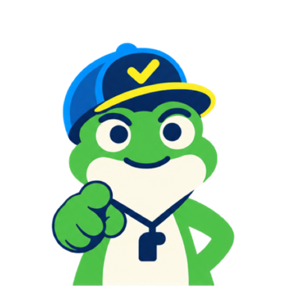
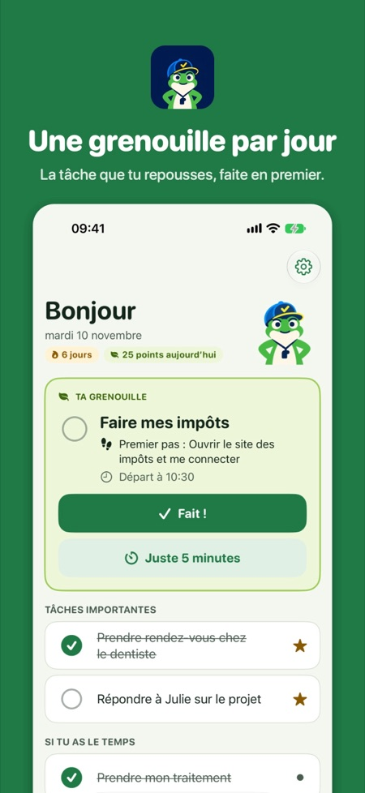
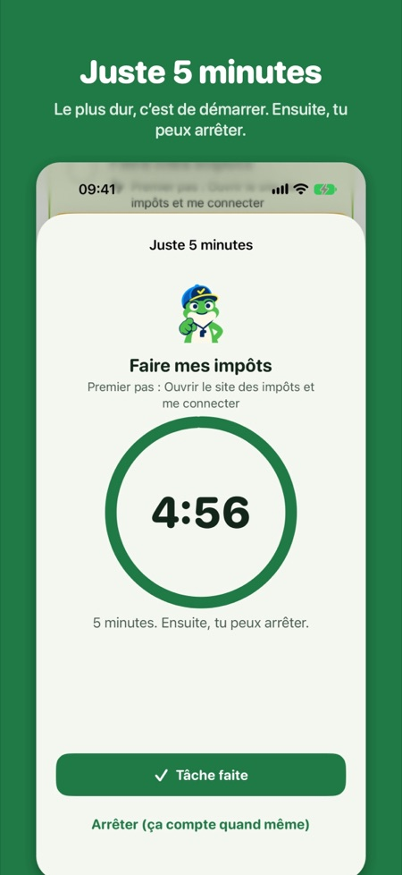
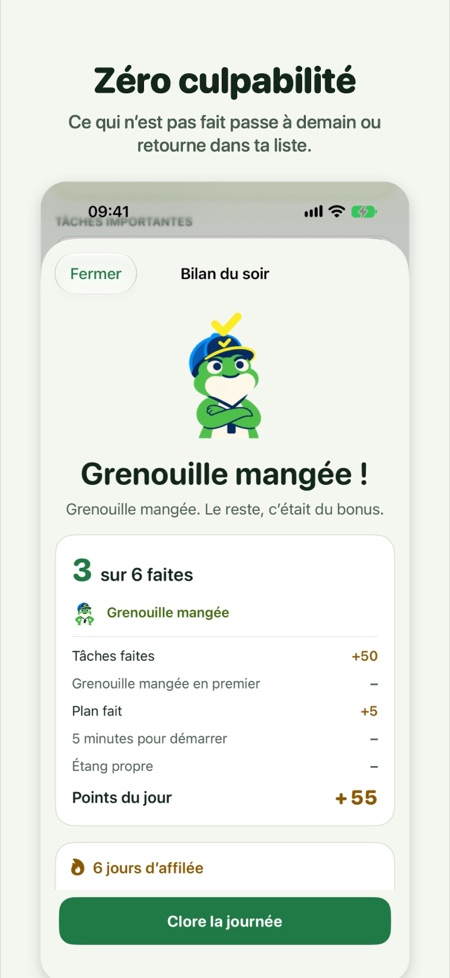

La tâche pénible d’abord.
Une grenouille par jour : la tâche que tu repousses, faite en premier. Premier pas de 2 minutes, 5 minutes pour démarrer, rappels sans harcèlement. Zéro culpabilité.
Bientôt sur l’App Store


Le plus dur, c’est de démarrer
Un premier pas de 2 minutes pour ta grenouille, et « juste 5 minutes » au minuteur. Arrête au bout de 5 si tu veux : ça compte quand même.
Des rappels qui aident
Ils nomment la tâche, et tu la coches depuis la notification. Aucun, léger, normal ou coach : c’est toi qui choisis.
Zéro culpabilité
Rien ne devient rouge. Ce qui n’est pas fait passe à demain, retourne dans ta liste ou se laisse tomber.
Des récompenses tout de suite
Des points dès que tu coches une tâche, des niveaux du têtard à la grenouille légendaire, 15 badges.
La méthode gratuite, Frogg Pro une fois
Toute la méthode est gratuite. Frogg Pro est un achat unique, sans abonnement ni pub : ta grenouille sur l’écran d’accueil et l’écran verrouillé, le minuteur de 5 minutes dans la Dynamic Island, les tâches récurrentes illimitées, tout ton historique et 3 autres icônes d’app. Essaie-le gratuitement 7 jours : ça s’arrête tout seul.
Privée par conception
Pas de compte, pas de pub, aucune donnée collectée. Tout reste sur ton iPhone. Politique de confidentialité
En français, anglais, allemand, italien, espagnol, chinois simplifié, hindi et arabe.